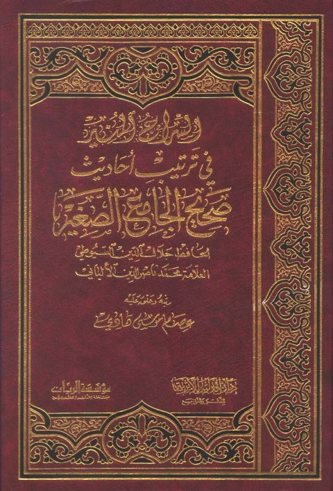
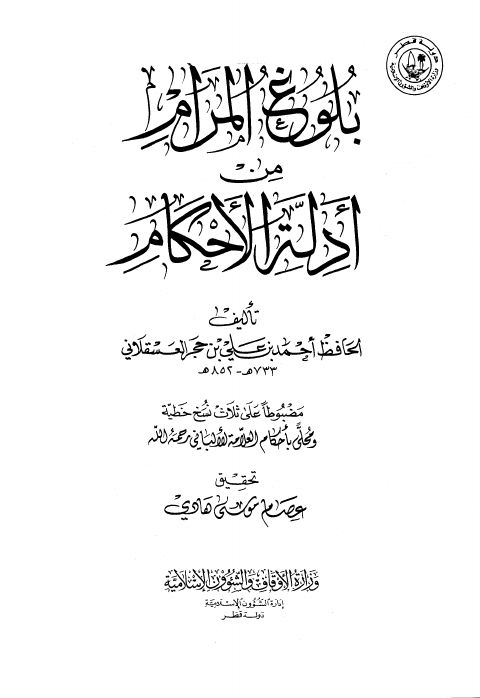
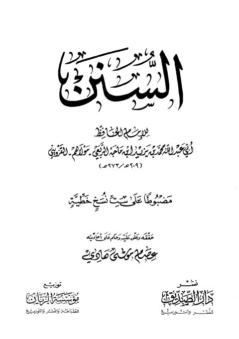
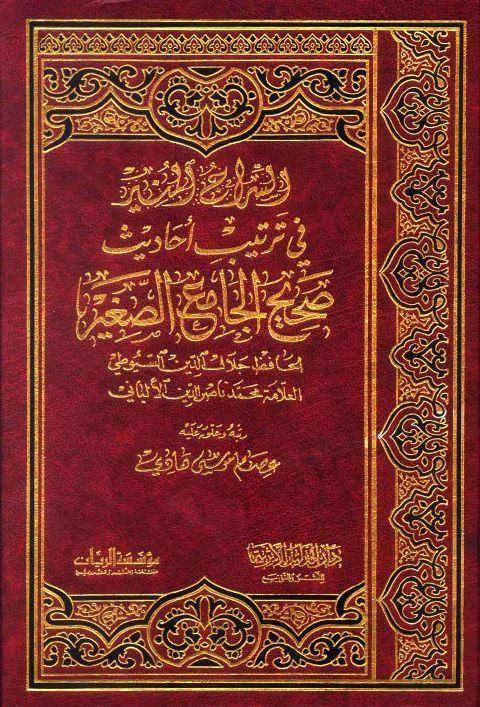
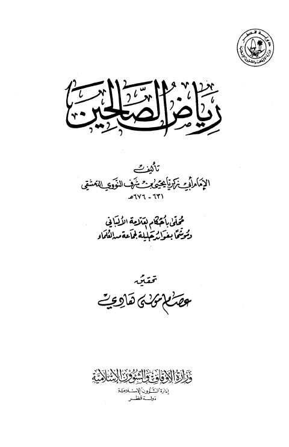
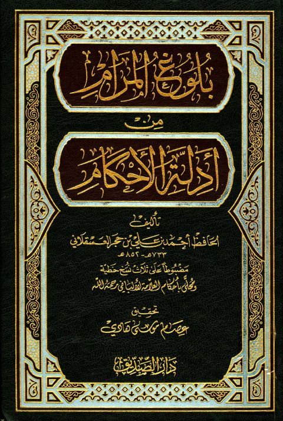

عصام موسى هادي
Author
· d. -
Resources

السراج المنير في ترتيب أحاديث صحيح الجامع الصغير السراج المنير في ترتيب أحاديث صحيح الجامع الصغير جلال الدين عبد الرحمن السيوطي
بلوغ المرام من أدلة الحكام- أوقاف قطر بلوغ المرام من أدلة الحكام- أوقاف قطر أحمد بن علي بن حجر العسقلاني رياض الصالحين- ط. أوقاف قطر
رياض الصالحين- ط. أوقاف قطر
يحيى بن شرف النووي
رياض الصالحين- ط. أوقاف قطر
رياض الصالحين- ط. أوقاف قطر
يحيى بن شرف النووي

السنن للإمام الحافظ ابن ماجه السنن للإمام الحافظ ابن ماجه محمد بن يزيد أبو عبد الله القزويني ابن ماجه
السراج المنير في ترتيب أحاديث صحيح الجامع الصغير السراج المنير في ترتيب أحاديث صحيح الجامع الصغير جلال الدين عبد الرحمن السيوطي
رياض الصالحين- ت. عصام هادي رياض الصالحين- ت. عصام هادي يحيى بن شرف النووي
بلوغ المرام من أدلة الحكام- دار الصديق بلوغ المرام من أدلة الحكام- دار الصديق أحمد بن علي بن حجر العسقلاني